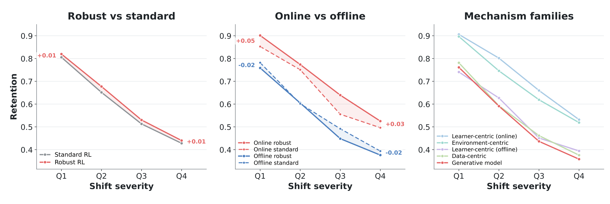

Retention decays at a similar rate overall, serving as a complementary metric against the absolute score. Figure 1 shows standard and robust RL, online and offline, and all five families share similar parallel retention curves. Online robust methods retain more than online standard methods at every level, so their mechanisms preserve nominal performance under shift. Offline robust methods retain about as much as offline standard methods (within 0.05 at every level) despite a positive absolute gap (see the gains), so offline robustness is realized through higher nominal scores. Online, the data based family (environment-centric) retains less than the learner-centric family at every level, consistent with data based mechanisms that may augment more qualified data to improve nominal performance. Offline, the data-centric and learner-centric families retain about the same.